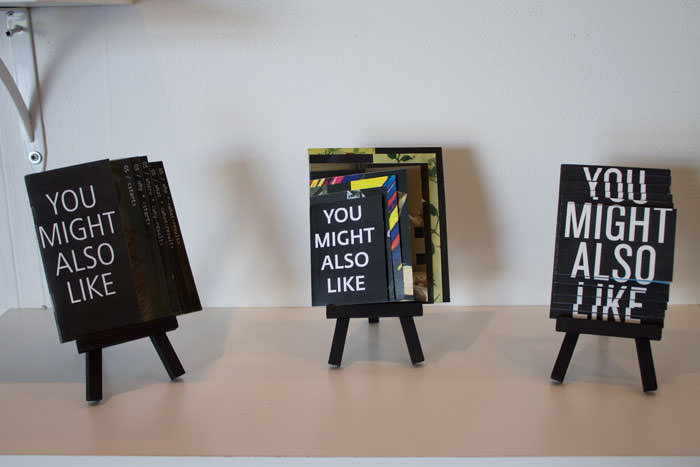
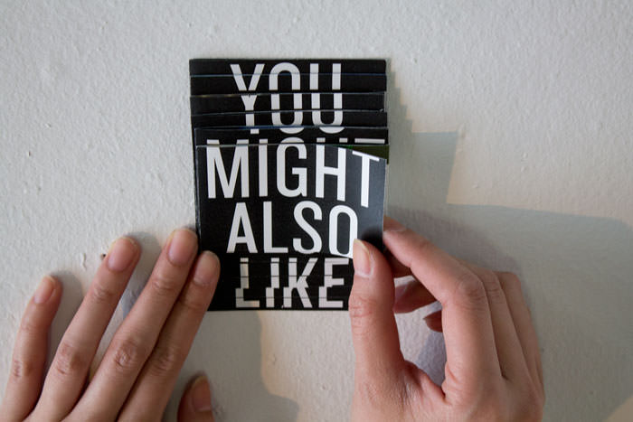
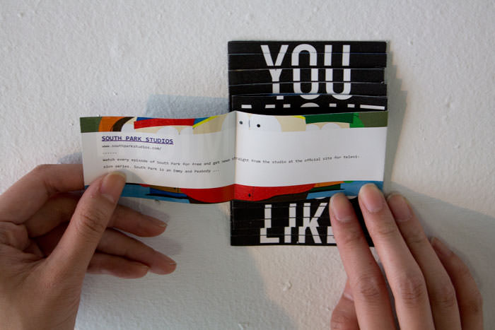
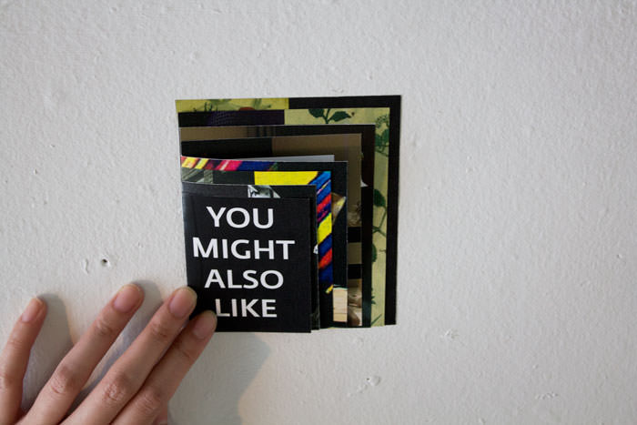
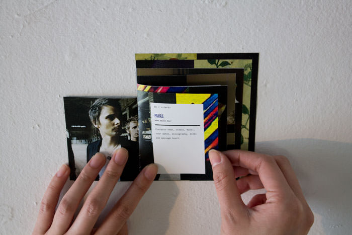
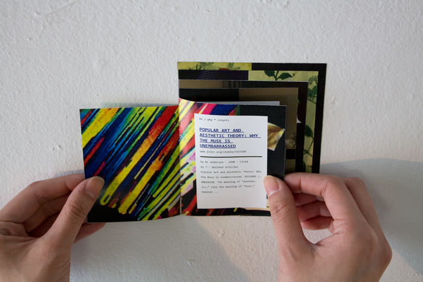
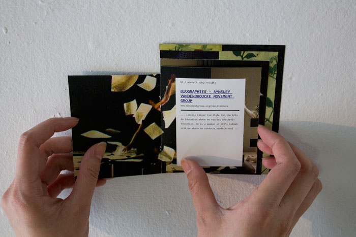
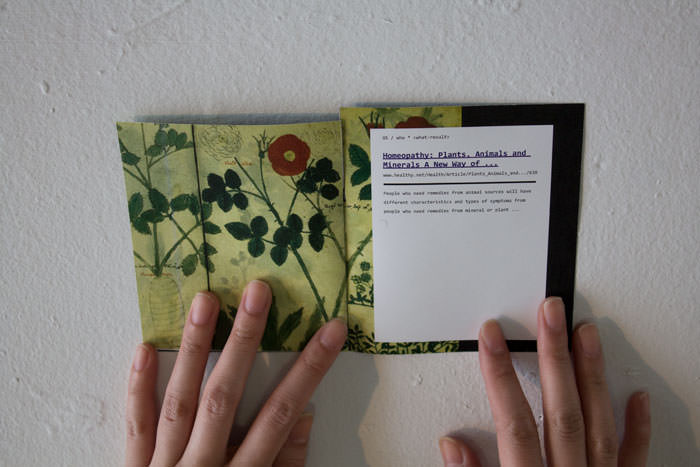

YOU MIGHT ALSO LIKE








Search engines such as Google have given us access to global information and analyses. Information gathered through Google Analytics has quickly began evolving into one globally connected consciousness. Google’s related searches attempts to reduce genericism by adjusting results based on factors such as your location and on its “freshness”, or popularity at the time. However, these related searches tend to be ordinary and dull.
By curating these “precurated” results from Google with a formula I designed, I created a string of unlikely and seemingly random connections. The formula uses Google’s wildcard search feature in conjunction with words associated with the basis of human curiosity (Who, what, when, where, and why.)
This study was represented in three different booklets, all formally exploring the amplifying nature of discovery.